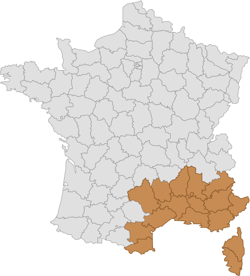

Bienvenue chez Machine à Coudre Méditerranée
Votre spécialiste en machines à coudre depuis 1995
Prise de Rendez-vous
Pour garantir un service personnalisé et de qualité, nous vous recevons uniquement sur rendez-vous.
Du Lundi au Vendredi : 9h00 - 12h00 / 14h00 - 17h00
Veuillez nous contacter pour fixer un créneau :
Téléphone : 04 42 36 02 55 | 06 16 36 52 95
Email : machineacoudre.med@gmail.com
Merci de ne pas vous présenter à l'atelier sans un rendez-vous confirmé.
Zone d'intervention
Nos Services
Vente de Machines
- Machines à coudre familiales
- Machines à coudre industrielles
- Machines d'occasion révisées
- Accessoires et pièces détachées
Réparation et Maintenance
- Réparation à domicile
- Maintenance préventive
- Dépannage urgent
- Révision complète
Formation et Conseil
- Formation à l'utilisation
- Conseils techniques
- Support après-vente
- Accompagnement personnalisé
Pourquoi Nous Choisir ?
Intervention Rapide
Nos techniciens interviennent dans un délai de 24 à 48 heures sur toute la région.
Garantie Qualité
Toutes nos interventions sont garanties et réalisées avec des pièces d'origine.
Service Personnalisé
Nous adaptons nos services à vos besoins spécifiques et à votre niveau d'expertise.